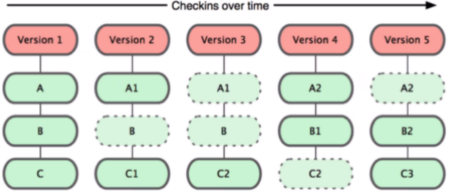
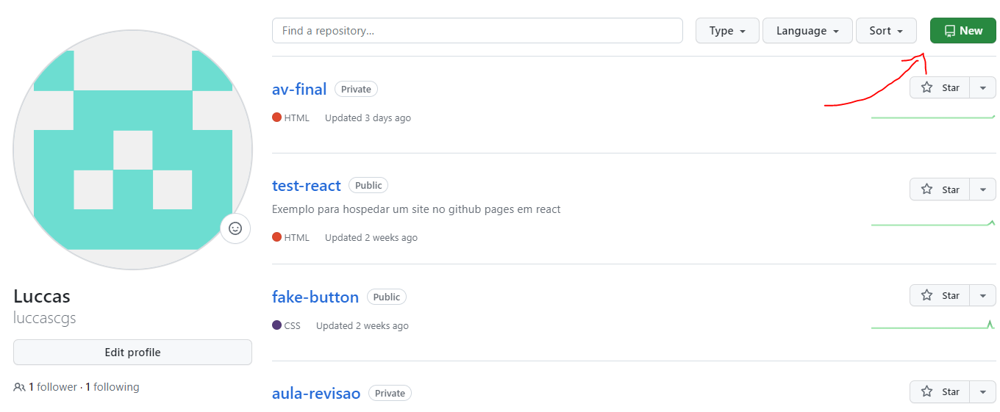
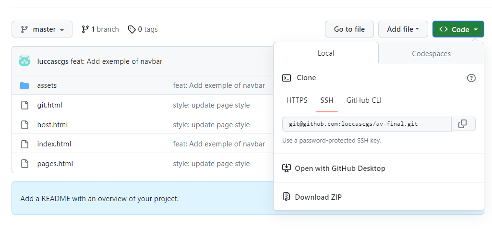

Git
O surgimento do Git se dá por diversos problemas, sendo os principais deles: Preciso voltar o arquivona versão que estava antes - rollback - Ctrl+Z; Deleção de arquivo sem a possibilidade derecuperação; Cópias e mais copias de um arquivos: tcc.docx; tcc-final.docx; tcc-agora-vai.docx;
Para solucionar esse problema os sistemas de controle de versão são ferramentas de software que ajudam as equipes de software a gerenciar as alterações ao código-fonte ao longo do tempo.
Assim foi criado o BitKeeper, um software capaz de versionar os códigos. Mas com o tempo, a ferramenta de versionamento que começou a exigir pagamento das outras empresas de software para que fosse usada.
Descontente com as cobranças do BitKeeper, o dono do Linux criou o Git. Corrigindo várias deficiências do BitKeeper.
O Git ferramenta de versionamento local, que salva o estado de cada arquivo na hora do versionamento e caso o arquivo não sofra a alteração ele cria um link simbólico para o arquivo não editado.
GitHub
Para a criação do GitHub, o problema apresentado foi a necessidade de conseguir trabalhar em equipe, usando o Git para controlar o versionamento do projeto. Além de como seria possível compartilhar o código fonte?
Para isso foi criado o GitHub. Um serviço web compartilhado para projetos que utilizam o Git para versionamento. É um local de armazenamento de código.
Desenvolvimento com Git e GitHub
O desenvolvimento de software possui uma característica forte quanto ao desenvolvimento paralelo(em conjunto) do software pela equipe de desenvolvedores.
O desenvolvimento de um site com o uso do Git e GitHub é uma prática comum na indústria de desenvolvimento web, pois oferece um ambiente colaborativo e controlado para equipes de desenvolvedores trabalharem juntas de maneira eficiente. Vamos explicar como esse processo funciona, destacando o uso de branches, pulls e requests.
Branchs
"Branch, em tradução literal, significa “ramo”. No mundo da programação, ela tem o mesmo significado: uma branch é uma ramificação do seu projeto. Os repositórios no GitHub funcionam como uma árvore. Quando criamos um repositório, ele automaticamente é iniciado com a branch master, que é equivalente ao tronco da sua árvore, ou seja, é a parte principal do seu projeto. As próximas branches são secundárias e, portanto, ramos da branch master." (Entendendo sobre branch e pull request - MANZIERI, Catarina - Acesso em 01/09/23)
É útil em situações nas quais você deseja adicionar um novo recurso ou corrigir um erro, gerando uma nova ramificação garantindo que o código instável não seja mesclado nos arquivos do projeto principal.

Pull Requests
Quando um desenvolvedor conclui uma tarefa em seu branch e deseja incorporar essas alterações ao branch principal, ele cria um Pull Request (PR) no GitHub. O PR é uma solicitação para que outros membros da equipe revisem e discutam as mudanças feitas no código. Isso cria um espaço para revisões de código, feedback e discussões antes de mesclar as alterações no branch principal.
Revisão e Discussão
Outros membros da equipe revisam o código no PR, fazem comentários, sugerem alterações e discutem as mudanças propostas. O objetivo é garantir a qualidade do código e manter a consistência do projeto.
Merging
Após a revisão e a aprovação, o PR pode ser mesclado (merged) no branch principal. As alterações feitas no branch do PR agora fazem parte do código principal do site.
Deploy
Após a mesclagem, o código atualizado pode ser implantado no ambiente de produção, tornando as alterações visíveis para os usuários do site.
O uso de Git e GitHub simplifica a colaboração, rastreia alterações e permite que os desenvolvedores trabalhem em conjunto de forma eficaz. Essa metodologia é essencial para o desenvolvimento web moderno, facilitando a construção e o aprimoramento de sites de maneira organizada e controlada.
Instalação e Configuração do Git
https://git-scm.com/downloadsIntalação
A Instalação do Git é só dar NEXT em tudo e fé :D
Configurando Git
Primeiro confira se o git está instalado e qual a versão
git --version
Entre na pasta documentos
cd Documents/
Configure o nome de usuário
git config --global user.name "'nome'"
Configure o e-mail
git config --global user.email "'email'"
Para criar pasta utilize
mkdir "nome da pasta"
Configurando GitHub com a chave SSH
Verificar se existe chave ssh
ls -al ~/.ssh
Adicionar uma nova chave
ssh-keygen -t ed25519 -C "'your_email@example.com'"
Inicializar agente-ssh
eval "$(ssh-agent -s)"
Adicionar chave ssh ao agente
ssh-add ~/.ssh/id_ed25519
Copiar chave ssh
clip < ~/.ssh/id_ed25519.pub
Adicionar chave no github
Github -> Settings -> SSH and GPG keys -> New SSH key -> Colar
Testar conexão
ssh -T git@github.com
yes
Para realizar um commit pelo terminal
git commit -m "descrição"
Criando e clonando repositórios
Criando por comando:
git init
Criando pelo GitHub:
Só clicar no botão e fé
Clonando repositórios:
Indo no repositório que você deseja clonar basta copiar a chave SSH
Após copiar basta ir no terminal e colocar o o seguinte código
git clone "git@github.com:usuario/repositorio.git"
Boas práticas
Adicione um README
Inclua um arquivo README.md em seus repositórios para descrever o projeto, suas funcionalidades e como configurá-lo. Isso ajuda os outros a entenderem rapidamente o propósito do repositório
NUNCA COMMITAR NA MAIN/MASTER/PROD
Para isso abrimos branchs:
feat: Algo relacionado com features que você adicionar;
fix: Algo para corrigir;
docs: Algo relacionado a documentações, README e afins;
style: Algo relacionado com estilização;
refactor: Algo relacionado com refatoração(refazer);
perf: Algo relacionado a performance;
test: Algo com testes;
chore: Algo para coisas relacionados a build, configs e afins. Exemplo: Use esse,
seja atualizando a versão do pacote ou instalando novas dependências.
Commit Semântico
Adote uma convenção de nomenclatura de commits significativa, como o "Commit Semântico", para que os commits sejam descritivos e fáceis de entender. Isso ajuda a rastrear as mudanças de forma mais clara.
CI e CD
Integração contínua: é uma pratica em que os desenvolvedores, frequentemente, juntam as alterações de código. Ou seja, realizam o merge da branch(ramo) para a master(raiz). Utilizamos um controle de versionamento para isso, o Git.
Entrega contínua: é uma prática de desenvolvimento de software na qual as alterações de código são automaticamente preparadas para uma liberação para produção. Usamos um servidor para hospedagem, o Heroku.
Realizar Backups
Algumas coisas podem fugir do nosso controle, como por exemplo: Invasões de hackers na base de dados; Uso indevido do banco de dados; Queda desconhecida de um serviço provedor. Por esses motivos é de extema importância realizar Backups